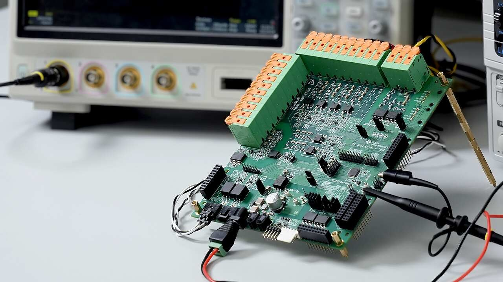

Lithium-ion batteries have become ubiquitous in our modern world, powering everything from laptops and smartphones to electric vehicles and large-scale energy storage systems. However, unlike traditional lead-acid batteries, lithium-ion cells require careful management to ensure their safety, performance, and longevity. This crucial role falls to the Battery Management System (BMS).
The Brains Behind the Battery
A BMS acts as the electronic control center for a lithium-ion battery pack. It's a network of sensors that constantly monitor various battery characteristics, including:
- Battery type: Identifying the specific lithium-ion chemistry for optimal management.
- Voltage: Monitoring individual cell voltages to prevent overcharging or excessive discharge.
- Temperature: Tracking thermal conditions to avoid overheating and potential damage.
- Capacity and State of Charge (SOC): Estimating the remaining energy available in the battery.
- Power consumption and operating time: Providing insights into battery usage patterns.
- Charging cycles: Monitoring battery health based on charge/discharge history.
This data is then processed by the BMS using algorithms to determine the battery's overall health and remaining energy. This information is critical for various functions within the system, including:
- Safety Systems: The BMS acts as a safeguard, preventing overcurrent, overcharging, or overheating through current limiting and shutdown mechanisms. This protects the battery from damage and potential fire hazards.
- Energy Management Systems: The BMS communicates with the system to optimize energy usage based on available battery power and load demands.
- Energy Storage Applications: In large-scale storage systems, the BMS ensures proper balancing and charging of individual cells within the battery pack for efficient energy management.

The Importance of BMS: Beyond Safety
While safety is paramount, the benefits of a BMS extend far beyond preventing fires. Here's how a BMS optimizes battery performance and lifespan:
- Balancing Cell Capacity: Batteries degrade unevenly over time. The BMS actively balances individual cells within the pack, ensuring they all reach full charge and discharge at similar rates. This maximizes overall battery capacity and prevents weaker cells from becoming overloaded.
- Temperature Management: Lithium-ion batteries are sensitive to temperature extremes. The BMS monitors temperature and adjusts charging or discharging based on ambient conditions. This protects the battery from damage and ensures optimal performance.
- Accurate SOC Estimation: Unlike lead-acid batteries that show gradual voltage decline, lithium-ion batteries shut down abruptly when depleted. The BMS uses advanced algorithms to accurately estimate remaining energy, preventing unexpected shutdowns and providing users with reliable battery information.
The Advantages of a BMS
In summary, a BMS plays a vital role in ensuring the:
- Safety: Preventing fires and other hazards associated with lithium-ion batteries.
- Life and Reliability: Optimizing battery usage patterns to extend lifespan and maintain reliable performance.
- Performance and Range: Maximizing battery capacity and providing accurate estimates of usable energy for optimal operation.
- Diagnosis and Communication: Monitoring battery health, collecting data for diagnostics, and communicating battery status to external systems.
- Cost and Warranty Reduction: BMS functions minimize the risk of damage, ultimately reducing overall system costs and warranty claims.
By effectively managing lithium-ion batteries, BMS technology ensures their safe, efficient, and long-lasting operation, making them a reliable and sustainable energy source for a wide range of applications.